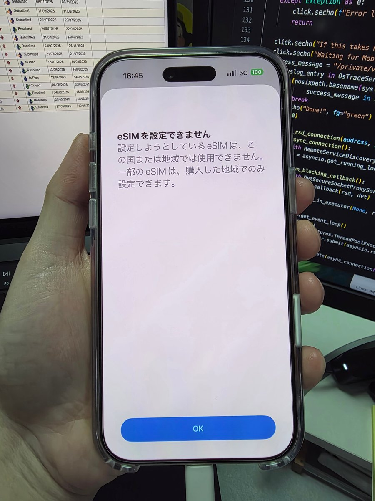

奶昔🥤
@realNyarime
@merlinLabo 这个应该是跟有锁机一样的那种激活策略吧，应该是属于网络锁

merlin🐧
@merlinLabo
最近有个 iOS 沙盒逃逸的漏洞（https://t.co/Wjq7hjQKsP）导致又能修改 MobileGestalt 从而解锁一些区域限制的功能了（例如 AI） ，但触发概率并非百分百。以我手上的国行 iPhone Air 为例，大约尝试了十次才成功。
另外，实测更改销售地区并不能绕过国行 iPhone Air 的 eSIM 添加限制。 https://t.co/u3sfkdisjz